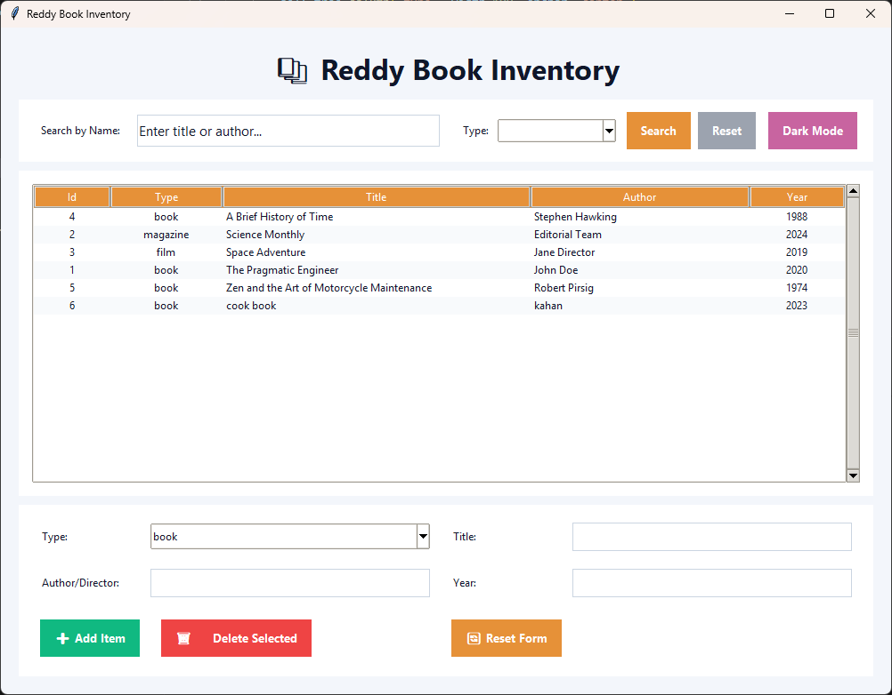
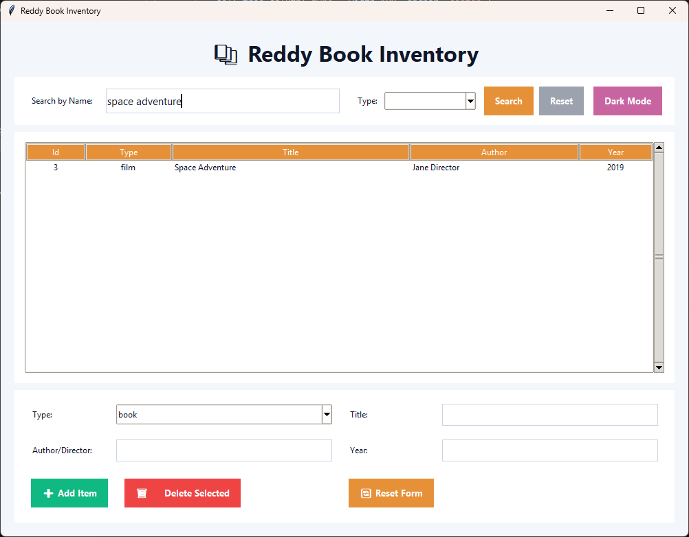

📱 Inventory Application
This is the Python-based desktop application for managing Books, Magazines, and Films.
Application Features
- Add, delete, and search items (books, magazines, films)
- Scrollable list UI
- Author details
- Clean Python + Tkinter interface
💻 Frontend (Tkinter UI Code)
View the source code for the Python Tkinter application interface.
Key UI Components
- Search and filter items
- Add item modal
- Delete & manage inventory
- Smooth animations and responsive layout
(import tkinter as tk
from tkinter import ttk, messagebox
import tkinter.font as tkfont
import requests
# The API address MUST match your running Flask server
API = "http://127.0.0.1:5000/items"
class InventoryApp:
def __init__(self, root):
self.root = root
root.title("Reddy Book Inventory")
root.geometry("1000x750")
# --- Theme State ---
self.is_dark = False # Set LIGHT mode as DEFAULT
# --- Color Definitions (Used in both themes) ---
self.ACCENT_SEARCH = '#e69138' # Orange
self.ACCENT_RESET_FORM = '#e69138' # **NEW: Reset form is now Orange**
self.ACCENT_TOGGLE = '#c864a0' # Pink/Purple (used for theme toggle button)
self.ACCENT_GREEN = '#10b981'
self.ACCENT_RED = '#ef4444'
# --- Base Configuration ---
self.style = ttk.Style()
try:
self.style.theme_use('clam')
except Exception:
pass
self.title_font = tkfont.Font(family='Segoe UI', size=24, weight='bold')
self.big_font = tkfont.Font(family='Segoe UI', size=11)
self.btn_font = tkfont.Font(family='Segoe UI', size=10, weight='bold')
# --- Layout Components ---
# Main Title
self.title = tk.Label(self.root, text="📚 Reddy Book Inventory", font=self.title_font)
self.title.pack(pady=(20, 10))
# 1. SEARCH BAR
self.search_frame = ttk.Frame(self.root, padding=(18, 14, 18, 14))
self.search_frame.pack(fill=tk.X, padx=20)
self.style.configure('Custom.TFrame') # Ensure style exists
self._create_search_widgets()
self._add_placeholder(self.search_entry)
# 2. TABLE (Treeview)
columns = ("id", "type", "title", "author", "year")
self.tree_frame = ttk.Frame(self.root, padding=15)
self.tree_frame.pack(fill=tk.BOTH, expand=True, padx=20, pady=(10, 10))
self.tree = ttk.Treeview(self.tree_frame, columns=columns, show="headings")
self.vsb = ttk.Scrollbar(self.tree_frame, orient="vertical", command=self.tree.yview)
self.tree.configure(yscroll=self.vsb.set)
for col in columns:
self.tree.heading(col, text=col.capitalize())
self.tree.column("id", width=60, anchor='center')
self.tree.column("type", width=100, anchor='center')
self.tree.column("title", width=320)
self.tree.column("author", width=220)
self.tree.column("year", width=80, anchor='center')
self.vsb.pack(side=tk.RIGHT, fill=tk.Y)
self.tree.pack(fill=tk.BOTH, expand=True)
# 3. FORM FRAME
self.form_frame = ttk.Frame(self.root, padding=(12, 10, 12, 12))
self.form_frame.pack(fill=tk.X, padx=20, pady=(0, 20))
self._create_form_widgets()
# Apply default theme (Light Mode) and load data
self._apply_light_theme()
self.load_items(reapply_theme=False)
# --- Theme Logic ---
def _apply_light_theme(self):
"""Applies light theme styling to all widgets."""
self.is_dark = False
# Colors
bg = '#f3f6fb'
secondary_bg = '#ffffff'
text_fg = '#0f172a'
input_bg = '#ffffff'
input_border = '#cbd5e1'
accent_reset_gray = '#9ca3af'
# Root and Title
self.root.configure(bg=bg)
self.title.config(bg=bg, fg=text_fg)
# Style Configuration
self.style.configure('TFrame', background=bg)
self.style.configure('TLabel', background=secondary_bg, foreground=text_fg)
# Update Frame Backgrounds
self.style.configure('Form.TFrame', background=secondary_bg)
self.style.configure('Search.TFrame', background=secondary_bg)
self.style.configure('Custom.TFrame', background=secondary_bg)
self._update_frame_backgrounds(secondary_bg)
# Entry Widgets (Search and Form)
for entry in [self.search_entry, self.title_entry, self.author_entry, self.year_entry]:
entry.config(bg=input_bg, fg=text_fg, insertbackground=text_fg, highlightbackground=input_border, highlightcolor=input_border)
# Combobox
self.style.configure('TCombobox', fieldbackground=input_bg, foreground=text_fg)
self.style.map('TCombobox', fieldbackground=[('readonly', input_bg)], background=[('readonly', input_bg)])
# Treeview (Table)
self.style.configure('Treeview',
background=secondary_bg,
fieldbackground=secondary_bg,
foreground=text_fg)
self.style.configure('Treeview.Heading',
background=self.ACCENT_SEARCH,
foreground=secondary_bg)
self.tree.tag_configure('odd', background='#f8fafc', foreground=text_fg)
self.tree.tag_configure('even', background='#ffffff', foreground=text_fg)
# Buttons
self.reset_search_btn.config(bg=accent_reset_gray, activebackground='#707886')
self.reset_form_btn.config(bg=self.ACCENT_RESET_FORM, activebackground='#c47a30')
self.theme_btn.config(text="Dark Mode")
def _apply_dark_theme(self):
"""Applies dark theme styling to all widgets."""
self.is_dark = True
# Colors
bg = '#1e1e1e'
secondary_bg = '#2c2c2c'
text_fg = '#f8fafc'
input_bg = '#374151'
input_border = '#4b5563'
accent_reset_gray = '#4b5563'
# Root and Title
self.root.configure(bg=bg)
self.title.config(bg=bg, fg=text_fg)
# Style Configuration
self.style.configure('TFrame', background=bg)
self.style.configure('TLabel', background=secondary_bg, foreground=text_fg)
# Update Frame Backgrounds
self.style.configure('Form.TFrame', background=secondary_bg)
self.style.configure('Search.TFrame', background=secondary_bg)
self.style.configure('Custom.TFrame', background=secondary_bg)
self._update_frame_backgrounds(secondary_bg)
# Entry Widgets (Search and Form)
for entry in [self.search_entry, self.title_entry, self.author_entry, self.year_entry]:
entry.config(bg=input_bg, fg=text_fg, insertbackground=text_fg, highlightbackground=input_border, highlightcolor=input_border)
# Combobox
self.style.configure('TCombobox', fieldbackground=input_bg, foreground=text_fg)
self.style.map('TCombobox', fieldbackground=[('readonly', input_bg)], background=[('readonly', input_bg)])
# Treeview (Table)
self.style.configure('Treeview',
background=secondary_bg,
fieldbackground=secondary_bg,
foreground=text_fg)
self.style.configure('Treeview.Heading',
background=self.ACCENT_SEARCH,
foreground=secondary_bg)
self.tree.tag_configure('odd', background='#1e1e1e', foreground=text_fg)
self.tree.tag_configure('even', background='#2c2c2c', foreground=text_fg)
# Buttons
self.reset_search_btn.config(bg=accent_reset_gray, activebackground='#374151')
self.reset_form_btn.config(bg=self.ACCENT_RESET_FORM, activebackground='#c47a30')
self.theme_btn.config(text="Light Mode")
def _update_frame_backgrounds(self, color):
"""Manually updates backgrounds of the key frames."""
self.style.configure('Custom.TFrame', background=color)
self.search_frame.configure(style='Custom.TFrame')
self.tree_frame.configure(style='Custom.TFrame')
self.form_frame.configure(style='Custom.TFrame')
# --- Helper Functions for Tkinter Styling and Layout ---
def _create_search_widgets(self):
"""Creates and packs all widgets in the search frame."""
ttk.Label(self.search_frame, text="Search by Name:").pack(side=tk.LEFT, padx=(5, 5))
self.search_entry = tk.Entry(self.search_frame,
width=42,
font=self.big_font,
bd=0, relief='flat', highlightthickness=1)
self.search_entry.pack(side=tk.LEFT, padx=12, ipady=6)
ttk.Label(self.search_frame, text="Type:").pack(side=tk.LEFT, padx=(12, 0))
self.type_filter = ttk.Combobox(self.search_frame, values=["", "book", "magazine", "film"], width=14, font=self.big_font, state="readonly")
self.type_filter.pack(side=tk.LEFT, padx=(8, 12))
self.type_filter.set("")
self.search_btn = tk.Button(self.search_frame, text="Search", command=self.load_items, bg=self.ACCENT_SEARCH, fg='white', activebackground='#c47a30', relief='flat', font=self.btn_font, bd=0)
self.search_btn.pack(side=tk.LEFT, padx=(0,8), ipadx=12, ipady=8)
self.reset_search_btn = tk.Button(self.search_frame, text="Reset", command=self.reset_filters, fg='white', relief='flat', font=self.btn_font, bd=0)
self.reset_search_btn.pack(side=tk.LEFT, padx=(0,12), ipadx=12, ipady=8)
self.theme_btn = tk.Button(self.search_frame, text="Toggle Theme", command=self.toggle_theme, bg=self.ACCENT_TOGGLE, fg='white', activebackground='#9e447b', relief='flat', font=self.btn_font, bd=0)
self.theme_btn.pack(side=tk.RIGHT, ipadx=12, ipady=8)
def _create_form_widgets(self):
"""Creates and places all widgets in the form frame."""
labels = ["Type:", "Title:", "Author/Director:", "Year:"]
widgets = [
ttk.Combobox(self.form_frame, values=["book", "magazine", "film"], width=18, state="readonly"),
tk.Entry(self.form_frame, width=48, font=self.big_font, bd=0, relief='flat', highlightthickness=1),
tk.Entry(self.form_frame, width=48, font=self.big_font, bd=0, relief='flat', highlightthickness=1),
tk.Entry(self.form_frame, width=20, font=self.big_font, bd=0, relief='flat', highlightthickness=1)
]
self.type_box, self.title_entry, self.author_entry, self.year_entry = widgets
self.type_box.set("book")
for i, label in enumerate(labels):
ttk.Label(self.form_frame, text=label).grid(row=i // 2, column=2 * (i % 2), sticky='w', padx=(12, 8), pady=10)
# Input fields are correctly configured to take up more space
widgets[i].grid(row=i // 2, column=2 * (i % 2) + 1, sticky='ew', pady=10, ipady=4, padx=(0, 12))
self.form_frame.columnconfigure(1, weight=1)
self.form_frame.columnconfigure(3, weight=1)
button_row = 2
self.add_btn = tk.Button(self.form_frame, text="➕ Add Item", command=self.add_item, bg=self.ACCENT_GREEN, fg='white', activebackground='#059669', relief='flat', font=self.btn_font, bd=0)
self.add_btn.grid(row=button_row, column=0, pady=(15, 10), padx=12, ipadx=12, ipady=8, sticky='w')
self.delete_btn = tk.Button(self.form_frame, text="🗑️ Delete Selected", command=self.delete_item, bg=self.ACCENT_RED, fg='white', activebackground='#dc2626', relief='flat', font=self.btn_font, bd=0)
self.delete_btn.grid(row=button_row, column=1, pady=(15, 10), padx=12, ipadx=12, ipady=8, sticky='w')
# Reset Form Button - Color changed to Orange
self.reset_form_btn = tk.Button(self.form_frame, text="🔄 Reset Form", command=self.reset_form, bg=self.ACCENT_RESET_FORM, fg='white', activebackground='#c47a30', relief='flat', font=self.btn_font, bd=0)
self.reset_form_btn.grid(row=button_row, column=2, pady=(15, 10), padx=12, ipadx=12, ipady=8, sticky='w')
def _add_placeholder(self, entry):
# ... (Placeholder logic remains the same for theme compatibility)
self._placeholder_text = 'Enter title or author...'
def _insert_placeholder():
placeholder_fg = '#94a3b8' if self.is_dark else '#9ca3af'
text_fg = '#f8fafc' if self.is_dark else '#0f172a'
if not entry.get():
entry.insert(0, self._placeholder_text)
entry.config(fg=placeholder_fg)
def _clear_placeholder(event=None):
text_fg = '#f8fafc' if self.is_dark else '#0f172a'
if entry.get() == self._placeholder_text:
entry.delete(0, tk.END)
entry.config(fg=text_fg)
entry.bind('', _clear_placeholder)
entry.bind('', lambda e: _insert_placeholder())
_insert_placeholder()
def toggle_theme(self):
"""Switches between light and dark themes."""
if self.is_dark:
self._apply_light_theme()
else:
self._apply_dark_theme()
# Reload items to update row colors and refresh placeholder
self.load_items(reapply_theme=False)
self._add_placeholder(self.search_entry)
# --- API and Data Functions (Remain the same) ---
def load_items(self, reapply_theme=True):
params = {}
q = self.search_entry.get().strip()
if q and q != getattr(self, '_placeholder_text', ''): params["q"] = q
if self.type_filter.get().strip(): params["type"] = self.type_filter.get().strip()
try:
res = requests.get(API, params=params)
data = res.json()
except requests.exceptions.ConnectionError:
messagebox.showerror("Connection Error", "Could not connect to the Flask API. Ensure the backend is running.")
data = []
except Exception as e:
messagebox.showerror("Error", f"An unexpected error occurred: {e}")
data = []
for i in self.tree.get_children(): self.tree.delete(i)
for idx, item in enumerate(data):
tag = 'even' if idx % 2 == 0 else 'odd'
self.tree.insert("", tk.END, values=(item["id"], item["type"], item["title"], item["author"], item["year"]), tags=(tag,))
if not data:
self.tree.insert("", tk.END, values=("", "", "No items found in inventory.", "", ""), tags=('odd',))
def reset_filters(self):
self.search_entry.delete(0, tk.END)
self.type_filter.set("")
self._add_placeholder(self.search_entry)
self.load_items()
def reset_form(self):
self.type_box.set("book")
self.title_entry.delete(0, tk.END)
self.author_entry.delete(0, tk.END)
self.year_entry.delete(0, tk.END)
def add_item(self):
payload = {
"type": self.type_box.get(),
"title": self.title_entry.get(),
"author": self.author_entry.get(),
"year": int(self.year_entry.get() or 0)
}
try:
res = requests.post(API, json=payload)
if res.status_code == 201:
self.load_items(); self.reset_form()
messagebox.showinfo("Success", "Item Added")
else:
messagebox.showerror("Error", res.json().get('error', 'Failed to add item'))
except requests.exceptions.ConnectionError:
messagebox.showerror("Connection Error", "Could not connect to API.")
def delete_item(self):
selected = self.tree.selection()
if not selected:
messagebox.showwarning("Warning", "Select an item to delete")
return
item_data = self.tree.item(selected[0])["values"]
if not item_data or not item_data[0] or item_data[2] == "No items found in inventory.":
messagebox.showwarning("Warning", "Please select a valid item row to delete.")
return
item_id = item_data[0]
try:
res = requests.delete(f"{API}/{item_id}")
if res.status_code == 200:
self.load_items(); messagebox.showinfo("Deleted", "Item removed")
elif res.status_code == 404:
messagebox.showwarning("Not Found", "Item already deleted or not found."); self.load_items()
else:
messagebox.showerror("Error", "Failed to delete item.")
except requests.exceptions.ConnectionError:
messagebox.showerror("Connection Error", "Could not connect to API.")
if __name__ == '__main__':
root = tk.Tk()
app = InventoryApp(root)
root.mainloop())
🖥️ Backend (Python + Flask)
View the source code for the full REST API to support CRUD operations for the inventory.
Backend Features
- Flask Python server
- SQLite database
- REST API for add, delete, search
- CORS enabled for frontend communication
from flask import Flask, request, jsonify
from flask_cors import CORS
# Ensure this line correctly imports the Item class from the new models.py
from models import Item
import os
import json
import operator
# --- FILE PERSISTENCE CONFIGURATION (MANDATORY CHANGE) ---
BASE_DIR = os.path.dirname(__file__)
DATA_FILE_PATH = os.path.join(BASE_DIR, 'library_data.json')
# --- END PERSISTENCE CONFIGURATION ---
app = Flask(__name__)
CORS(app)
media_items = []
next_item_id = 1
def load_data():
"""Loads media data from the JSON file into memory at startup."""
global media_items, next_item_id
media_items = []
# Check 1: If the file does not exist, create it with samples
if not os.path.exists(DATA_FILE_PATH):
print(f"Creating initial data file: {DATA_FILE_PATH}")
# FIX: Ensure all sample creation uses 'id=' and not 'item_id='
samples = [
Item(id=1, type='book', title='The Pragmatic Engineer', author='John Doe', year=2020),
Item(id=2, type='magazine', title='Science Monthly', author='Editorial Team', year=2024),
Item(id=3, type='film', title='Space Adventure', author='Jane Director', year=2019),
Item(id=4, type='book', title='A Brief History of Time', author='Stephen Hawking', year=1988),
Item(id=5, type='book', title='Zen and the Art of Motorcycle Maintenance', author='Robert Pirsig', year=1974),
]
media_items = samples
save_data()
next_item_id = len(media_items) + 1
return
try:
# Check 2: Load data from the existing file
with open(DATA_FILE_PATH, 'r') as f:
data = json.load(f)
for item_data in data:
media_items.append(Item(
id=item_data.get('id'), # FIX: Ensure constructor call uses 'id'
type=item_data.get('type'),
title=item_data.get('title'),
author=item_data.get('author'),
year=item_data.get('year')
))
if media_items:
next_item_id = max(item.id for item in media_items) + 1
else:
next_item_id = 1
except Exception as e:
print(f"Error loading JSON data: {e}. Starting with empty data.")
media_items = []
next_item_id = 1
def save_data():
"""Writes the current data list back to the JSON file for persistence."""
try:
data_to_save = [item.as_dict() for item in media_items]
with open(DATA_FILE_PATH, 'w') as f:
json.dump(data_to_save, f, indent=4)
except Exception as e:
print(f"CRITICAL ERROR: Failed to save JSON data: {e}")
# --------------------------------------------------------------------------------
# API ROUTES
# --------------------------------------------------------------------------------
@app.route('/items', methods=['GET'])
def list_items():
q = request.args.get('q', '').strip().lower()
t = request.args.get('type', '').strip().lower()
filtered_items = media_items
if t in ('book', 'magazine', 'film'):
filtered_items = [item for item in filtered_items if item.type == t]
if q:
filtered_items = [
item for item in filtered_items
if q in item.title.lower() or q in item.author.lower()
]
filtered_items.sort(key=operator.attrgetter('title'))
items_as_dict = [i.as_dict() for i in filtered_items]
return jsonify(items_as_dict)
@app.route('/items', methods=['POST'])
def create_item():
global next_item_id
data = request.get_json() or {}
type_ = data.get('type')
title = data.get('title')
author = data.get('author')
year = data.get('year')
if not type_ or not title:
return jsonify({'error': 'type and title are required'}), 400
if type_.lower() not in ('book', 'magazine', 'film'):
return jsonify({'error': 'invalid type'}), 400
new_item = Item(
id=next_item_id, # FIX: Ensure constructor call uses 'id'
type=type_.lower(),
title=title.strip(),
author=(author or '').strip(),
year=year
)
media_items.append(new_item)
next_item_id += 1
save_data()
return jsonify(new_item.as_dict()), 201
@app.route('/items/', methods=['DELETE'])
def delete_item(item_id):
global media_items
initial_count = len(media_items)
media_items = [item for item in media_items if item.id != item_id]
if len(media_items) == initial_count:
return jsonify({'error': 'not found'}), 404
save_data()
return jsonify({'ok': True})
if __name__ == '__main__':
load_data()
app.run(debug=True, port=5000)
📸 App & UI Gallery
Showcase your application's interface and workflow.



📬 Contact
Want to collaborate or explore the code? Reach out anytime!
Email: vetapavankumarreddy@gmail.com